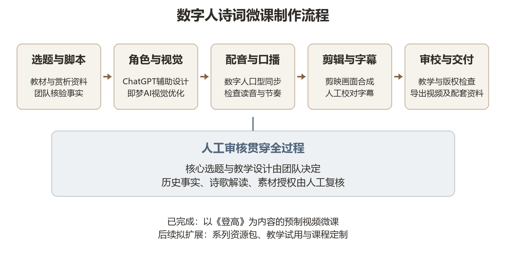

脚本与讲解结构
辅助整理讲解层次与表达草案，诗词知识和历史事实由人工核验。
MAKING / 创作与技术
以内容设计为起点，以固定的小杜甫形象为核心，AIGC 辅助完成数字人微课制作。
PRODUCTION FLOW / 制作流程
技术工具负责辅助生成与制作，诗词解释、史实和最终表达由团队检查。

确定诗词主题与学习场景，整理教材、赏析及可核验的背景资料。
组织人物口吻、诗句朗读、逐联赏析和情感归纳，并人工检查史实与释义。
沿用作品中既有数字人造型，统一服饰、比例、诗卷与国风场景。
生成或处理口播与画面素材，检查发音节奏、口型表现和视觉一致性。
剪辑画面、配乐和字幕，检查诗句字词、断句和音画同步后导出成片。
后续通过教学试用或观看反馈发现问题，迭代脚本、画面和配套材料。
AIGC IN PRACTICE / AIGC 应用
辅助整理讲解层次与表达草案，诗词知识和历史事实由人工核验。
围绕既有“小杜甫”角色进行形象设计和画面辅助，保持造型统一。
用于数字人口播表现与声音制作，并检查读音、节奏和诗句断句。
将角色、场景、字幕与讲解素材整合成完整的微课视频。
LEARNING DESIGN / 表达方式
项目关注诗歌内容与人物讲述的结合，不以单一技术替代教学设计。
| 表达方式 | 常见呈现 | 本项目的侧重点 |
|---|---|---|
| 教师录屏 | 教师讲解、课件同步 | 以诗人角色建立叙事情境，配合诗词意象组织讲解 |
| 普通动画微课 | 动画场景与旁白讲解 | 让数字诗人承担讲述角色，连接创作背景与作品解读 |
| 通用数字人口播 | 数字人播报预制内容 | 围绕固定 IP 设计口吻、画面和诗词教学内容 |